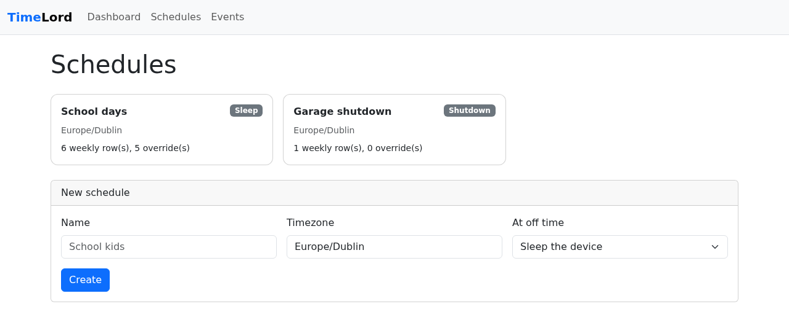

Schedules¶
A schedule tells a device when it may be on. You create named schedules in the dashboard, assign each device to one, and the agent puts the device to sleep (or shuts it down) whenever the schedule says it should be off — that is, outside every on-window. Nothing wakes a sleeping device: "on" only means allowed to be on.

Developer preview
Scheduling is new. The agent-side sleep and shutdown have not been exercised on real hardware beyond compile checks and unit tests — try it on a spare machine first (see Trying it safely).

How a schedule works¶
A schedule has a name, a timezone, and an action taken at off time:
| Action | What the agent does |
|---|---|
SLEEP |
Suspends the device (SetSuspendState, never hibernate) and keeps re-suspending it for as long as the schedule says off, if someone wakes it. |
SHUTDOWN |
Runs shutdown.exe /s /t 30 — a 30-second on-screen warning, then power off. |
Weekly rows (the base schedule)¶
Each day is its own line from midnight to midnight. A row has a set of days, an On from time and an Off at time, and says: on each of these days the device may be on from On from until Off at. You can add as many rows as you like, including several for the same day. All the windows are combined; the device is on inside them and off everywhere else.
| Days | On from | Off at | Meaning |
|---|---|---|---|
| Mon–Fri | 08:30 | 10:30 | On 08:30–10:30 ... |
| Mon–Fri | 18:30 | 23:30 | ... and again 18:30–23:30; off the rest of the day |
| Sat, Sun | (blank) | (blank) | The whole day |
| Thu | 00:00 | 16:15 | On from midnight until 16:15 ... |
| Thu | 16:30 | 00:00 | ... off 16:15–16:30, on again 16:30 until midnight |
Rules for the times:
- Windows stay inside their day. A window never runs past midnight; Off at 00:00 means midnight
at the end of the day, so
18:30 → 00:00is the evening and00:00 → 00:00is the whole day. Off at must otherwise be later than On from, and the dashboard and API refuse a row that isn't. - Blank means the edge of the day. Leave On from blank to start at the beginning of the day (00:00) and Off at blank to run to midnight; both blank is the whole day.
- The next day takes over. A window that ends at midnight simply continues into the next day's window if that starts at 00:00 — there is no gap at midnight. So a late night is two rows: Fri, on from 18:00, no off and Sat, no on from, off at 01:00 give one continuous window from Friday 18:00 to Saturday 01:00.
- Off for a while inside a day is a gap between two rows (the Thursday example above).
- A day with no row is off all day — but a schedule with no rows at all restricts nothing, so a newly created, still-empty schedule doesn't keep a device asleep.
Rows are managed with the + and − buttons on the schedule page:
- The bottom row is always blank. Fill it in and press + to keep it and get a new blank row; with nothing filled in, + does nothing.
- − disables a row: it is dimmed, kept, and ignored (it gives no window, exactly as if it were deleted), so you can switch a row off and bring it back later. Pressing − on a disabled row deletes it.
- Nothing is stored until you press Save schedule. A schedule whose rows are all disabled restricts nothing, like one with no rows.
Each row on the schedule page shows its next window (for example Next: Thu 22 Oct 18:30 → Thu 22 Oct 23:30), and the page lists the combined on-windows for the next 14 days, so you can check what a schedule does before relying on it.
Earlier versions
Earlier versions described a schedule as off times (one rule per day, an off and an on time, with an inferred "after midnight"). On upgrade the controller converts existing schedules to on-windows automatically: weekly rules become the equivalent rows exactly. Overrides are converted too, but they can no longer narrow a day (see below). A schedule whose old rules left no on-time at all ends up with no rows, which restricts nothing.
Overrides (holidays and one-offs)¶
An override is a date range with an On from and an Off at time, written like a row (same blank and midnight rules). It is layered on after the weekly rows are expanded: for every date in the range it adds that window to the day, and everything is combined. So an override can extend a day or add time on a day with no row, but it can never narrow one — an override inside an existing window changes nothing. The weekly rows themselves are never edited; remove the override and the day goes back. A single day is an override whose start and end date are the same (in the dashboard, leave "To" blank). Overrides stack.
Each override has Disable and Remove buttons. Disable keeps the override but stops it adding
any time, exactly as if it were gone, and Enable turns it back on; use it to switch a holiday off and
on again without re-entering it. (In the API: PUT /api/v1/calendars/{id}/overrides/{overrideId}/enabled
with {"enabled": false}.)
Example
Weekdays normally have 07:00–08:30 and 15:30–21:30. Half-term, 30 Oct – 8 Nov, on 09:00–23:00 adds a long window each of those days, so the device is on 07:00–08:30 and 09:00–23:00 (the window 15:30–21:30 is absorbed). Birthday sleepover, 13 Nov, on from 15:30 extends that evening to midnight, and a second override for 14 Nov, off at 02:00 (no on from) carries it to 02:00. To let a holiday run late you add the early-hours piece as an override for the next date.
Allowing a device longer¶

On a device's page, +15 min / +30 min / +1 hour grant a temporary extension:
- If the device is already inside an off window, it is allowed back on for that long from now.
- Otherwise the next off window starts that much later.
- Each request may grant 1–240 minutes; the page shows "Extended until HH:MM" with a Clear button.
An extension never edits the schedule. It is cleared if you assign the device a different schedule.
How the device enforces it¶
The controller resolves the schedule (rows, overrides and any extension) into concrete off windows — the gaps between the on-windows, as absolute start and end times for the next 28 days — and sends them to the agent with a revision that changes whenever they do. The agent therefore never has to understand rows or overrides; it only asks whether the time now falls inside an off window.
- Cached locally. The latest schedule is saved as
schedule.jsonnext toagent.toml, so enforcement continues across restarts and while the controller is unreachable. - Startup and resume. The cached schedule can be stale: the schedule may have been edited, or the device granted more time, while it was off or asleep. So the agent does not enforce the cache the moment it starts. It waits until the controller has confirmed the schedule (in the registration or heartbeat response, or a long poll). If the controller stays unreachable for 90 seconds it enforces the cache anyway, so an offline device is still governed. The same re-confirmation happens after the agent resumes from a sleep it caused, and after any wake it notices (a wake-up much later than planned, such as a closed lid). The notifier is not told about upcoming actions from an unconfirmed cache either. In practice a device that boots inside a cached off window stays on for a few seconds while it checks in, then either goes back to sleep (nothing changed) or stays on (the schedule or an extension now says it may).
- Changes arrive immediately. Besides every heartbeat, the agent holds a long poll open to
GET /api/v1/agents/{id}/schedule?revision=…. The controller answers the moment an extension, assignment or schedule edit changes the revision, so "+30 minutes" takes effect within moments, not at the next heartbeat. With no change the request simply returns after about 30 seconds and the agent asks again. - Trusted time. The agent compares the windows with NTP-corrected time, not the system clock, so changing the PC's clock doesn't move the schedule (see the clock).
- Enforcement loop. The agent acts when the current time is inside an off window, and
re-checks at the next window start, on any schedule change, and at least every 60 seconds — so a
device woken mid-window is put back to sleep within about a minute. Each action is reported as
POWER_ACTION_REQUESTED/_COMPLETED/_FAILEDevents.
Devices without a schedule¶
A device with no schedule assigned is unrestricted: the agent never puts it to sleep or shuts it down. Earlier versions slept such a device 02:00–06:00 (and 01:00–08:30 while the controller was unreachable); both rules were removed.
Admin API¶
All of these are unauthenticated in this preview — see the security boundary.
| Method and path | Purpose |
|---|---|
GET /api/v1/calendars · GET /api/v1/calendars/{id} |
List / read schedules (with rows and overrides) |
POST /api/v1/calendars |
Create |
PUT /api/v1/calendars/{id} |
Replace name, timezone, action and the whole set of weekly rows (overrides untouched) |
DELETE /api/v1/calendars/{id} |
Delete; devices using it lose their schedule |
POST /api/v1/calendars/{id}/overrides |
Add an override |
DELETE /api/v1/calendars/{id}/overrides/{overrideId} |
Remove an override |
PUT /api/v1/calendars/{id}/overrides/{overrideId}/enabled |
Switch an override off or on ({"enabled": false}) |
GET /api/v1/calendars/{id}/allowed?from=&days= |
Preview the resolved on-windows (what the dashboard's table shows) |
GET /api/v1/calendars/{id}/windows?from=&days= |
Preview the resolved off windows (what the agent is sent) |
PUT /api/v1/devices/{id}/calendar |
Assign ({"calendarId": "<uuid>"}) or clear ({"calendarId": null}) |
POST /api/v1/devices/{id}/extend |
Allow longer ({"minutes": 30}) |
GET /api/v1/agents/{id}/schedule |
Agent long poll for schedule changes (204 = no schedule) |
=== "Create a schedule"
The JSON field for a row is still called `rules`; `startTime` / `endTime` may be left out
(start or end of the day), and `00:00` as an end means midnight. `"enabled": false` keeps a row
but ignores it (default `true`).
```console
$ curl -X POST http://localhost:9099/api/v1/calendars \
-H 'Content-Type: application/json' -d '{
"name": "School days",
"timezone": "Europe/Dublin",
"action": "SLEEP",
"rules": [
{"days": ["MONDAY","TUESDAY","WEDNESDAY","THURSDAY","FRIDAY"], "startTime": "07:00", "endTime": "08:30"},
{"days": ["MONDAY","TUESDAY","WEDNESDAY","THURSDAY","FRIDAY"], "startTime": "15:30", "endTime": "21:30"},
{"days": ["SATURDAY","SUNDAY"], "startTime": "08:30", "endTime": "12:00"},
{"days": ["SATURDAY","SUNDAY"], "startTime": "14:00"},
{"days": ["SATURDAY","SUNDAY"], "endTime": "01:00"}
]
}'
```
=== "Add a holiday override"
```console
$ curl -X POST http://localhost:9099/api/v1/calendars/$CALENDAR_ID/overrides \
-H 'Content-Type: application/json' -d '{
"name": "Christmas",
"startDate": "2026-12-19",
"endDate": "2027-01-05",
"startTime": "08:00"
}'
```
=== "Another 30 minutes"
```console
$ curl -X POST http://localhost:9099/api/v1/devices/$DEVICE_ID/extend \
-H 'Content-Type: application/json' -d '{"minutes": 30}'
```
Validation errors come back in the usual error shape, for example
INVALID_TIMEZONE, INVALID_RULE (no days, or an Off at that is not after On from — a window
can't run past midnight, add a row for the next day), INVALID_OVERRIDE (the same, or an end date
before the start date), CALENDAR_NAME_TAKEN (409), and NO_CALENDAR / NO_OFF_WINDOW (409) when
extending a device that has nothing to extend.
Trying it safely¶
- Create a schedule with a window that ends about 20 minutes from now (say, on from blank, off at 20 minutes ahead, for today's weekday) and the Sleep action, and assign it to a spare device. Remember the rest of that day, and every other day without a row, is then off.
- Watch the device sleep at the end of the window; wake it and confirm it is put back to sleep.
- Assign it again, press +15 min shortly before the window ends, and confirm it stays on.
- Only then try Shutdown, again on a machine you can afford to power off.